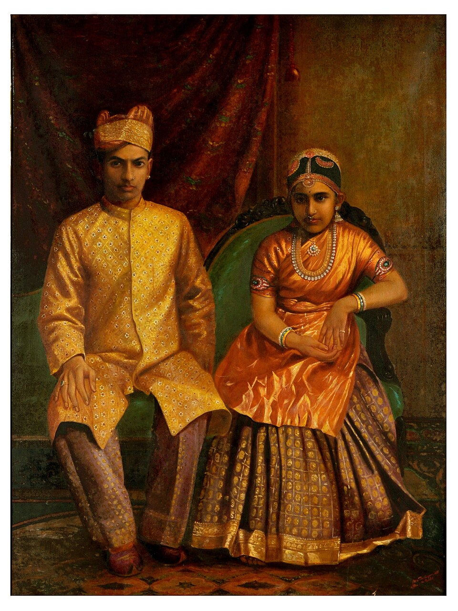

A Queen Forgotten by History
A 6-year-old girl became the Senior Maharani of Travancore. A forgotten story of matrilineal power, palace intrigue, Victorian morality, and the quiet end of a dynasty.
By 1900, the ruling family of Travancore was on the brink of extinction because there were no female heirs to continue the matrilineal line. Maharani Lakshmi Bayi asked her brother, Maharajah Moolam Thirunal, to adopt two young girls into the royal family. The girls selected were granddaughters of Raja Ravi Varma, a royal-turned-painter.
Not long after, a series of deaths in the royal family altered the line of succession, leaving a 6-year-old girl as the Senior Maharani of the state. While Maharajah Moolam Thirunal Rama Varma continued to reign, she became central to Travancore’s matrilineal succession system.
That 6-year-old was Sethu Lakshmi Bayi, one of the two young girls adopted into the royal line (the other, Sethu Parvathi Bayi, became the Junior Maharani). And if that name does not immediately ring a bell, that is precisely the point.
For someone who ruled millions and presided over one of India’s most prosperous princely states as Regent from 1924 to 1931, she has quietly faded from public memory. The story of her life and the unusual political world she inhabited is largely missing from popular Indian history.
Manu S. Pillai’s The Ivory Throne uncovers this largely forgotten world. It reveals a political and social order very different from the conventional image of Indian monarchy. At the heart of this world was the matrilineal inheritance system called Marumakkathayam. In Travancore, power flowed through women. The title of Maharani was not just ceremonial. Inheritance and legitimacy all came through the female line. A ruler was not necessarily succeeded by his son but by his sister’s son.
The Palace as a World of Ritual and Control
This system shaped every part of royal life. Daily routines at Sundara Vilasam Palace were controlled by the Palace Manual, which consisted of twelve volumes. Its rules covered even the mundane tasks - from the brushing of royal pearls (yes, her teeth were referred to as royal pearls) supervised by court dentists, to sleeping in the proper posture at night. There was no escape from the strict routines. Each morning, the Maharani’s staff guided her and her cousins to begin the royal bath, known as pallineerattu, in its full form. She wore crisp mundus, which made a rustling sound when she walked, changing them three times a day, all freshly laundered. She was always accompanied, and the constant presence of devoted servants enhanced her stature. A simple walk around the palace required a retinue of guards and maidservants, called pattakkars.
When Sethu Lakshmi Bayi turned 10, it was uncertain which eligible nobleman from Travancore would win her royal hand and approval. The choices were limited. Sethu Lakshmi Bayi could select her husband from only ten highborn families. Once the queen made her choice, the chosen groom, Ravi Verma, was taken to Bhakti Vilas, the Dewan’s official residence, where an English doctor, Col. James, performed a thorough medical examination. After receiving the doctor’s approval, the Resident was informed, and through him, the Madras Government. Eventually, when the Maharani was ready for marriage, astrologers determined an auspicious day for the ceremony, while the royal family’s head priest awkwardly tutored the young consort in the dos and don’ts of lovemaking.

The Maharani’s husband was not the Maharajah; he was merely a consort, a nobleman joining the dynasty but remaining socially and politically subordinate to his wife. This status difference was clear everywhere.
The Maharani’s full title highlighted the grandeur of her position: Her Highness Sree Padmanabhasevini, Vanchidharma Vardhini, Raja Rajeshwari, Maharani Pooradam Thirunal Sethu Lakshmi Bayi, Maharaja, Attingal Mootha Thampuran, Companion of the Imperial Order of the Crown of India, Maharani Regent of Travancore. In contrast, her husband was simply Mr. Rama Varma Valiya Koil Thampuran. His main role was to support his wife by creating the next generation. The rank difference was not just symbolic; it was institutional. The consort could not sit in her presence unless invited. He was not allowed to ride in the same carriage as the Maharani, as that would imply equality. When the Maharani entered the capital, she received a twenty-one gun salute, while the consort received only a rifle salute. At royal banquets, the hierarchy was clear. The Maharani and her children were served four types of dessert, while consorts received two, and ordinary guests had to settle for one. As she descended, hundreds of servants greeted her with seven precise namaskars, bowing from their heads to the ground. Even in death, the rules held firm. The palace was reserved for royalty to die. If the consort were nearing death, he had to be carried out to a private building since a subject could not die within royal walls. His children could not attend his funeral because royalty never participates in the ceremonies of subjects.
Distinguished visitors were trained to follow court protocol. Even the Maharani could not change these protocols. This carefully structured world created a remarkable contradiction. The Maharani had immense authority over millions but lived within a complex framework of restrictions that left little room for personal freedom. These rituals were tools to construct legitimacy. Power needed to be exercised but also had to appear sacred and unquestionable.
Palace Rivalry and Intrigue
The rivalry between the two adopted princesses of Travancore, Sethu Lakshmi Bayi and Sethu Parvathi Bayi, began early. Both were granddaughters of Raja Ravi Varma, adopted in 1900 to preserve the royal line. Sethu Lakshmi Bayi became the Senior Maharani, while Sethu Parvathi Bayi took on the role of Junior Maharani. However, under Travancore’s matrilineal system, the throne would pass through the Junior Maharani’s children, meaning that although Sethu Lakshmi Bayi later ruled as Regent, the future king was to be Sethu Parvathi Bayi’s son, Chithira Thirunal Balarama Varma. During their rivalry, palace life became tense and suspicious.
Pillai describes incidents where supporters of the Junior Maharani were accused of hiring sorcerers from the Malabar coast to perform rituals against the Regent. These claims were serious enough to trigger investigations involving British Residents. In politics, Sethu Parvathi Bayi appeared more controversial. British reports mentioned propaganda campaigns and accusations of black magic, later observing her push for a stronger Hindu political agenda after her son gained power.
Contemporary observers harshly criticized her as “arrogant, uncharitable, egotistical, bad-tempered, insular, and vindictive,” indicating she was widely disliked. Her son, Maharaja Chithira Thirunal Balarama Varma, was often seen as overshadowed by her influence. Even Archibald Wavell noted that while the Maharaja was “not altogether a fool,” he was “entirely overshadowed by his mother.” In contrast, Sethu Lakshmi Bayi frequently appeared moderate and reform-minded. Against her was the ambitious Junior Maharani, eager to secure power for her son.
The Victorian Morality
The traditional social order in Travancore was not based on monogamy. Instead, it relied on the matrilineal Marumakkathayam system, where family identity and property passed through women. Within this system, the practice of Sambandham gave women a level of sexual and social freedom that was very different from European expectations. A woman did not “marry into” another family; she remained in charge of her ancestral home (Taravad), and her partners were essentially guests without legal rights to her, her property, or her children. Since inheritance came from a mother’s brother to her children, the Western focus on “legitimate” paternity, which requires strict monogamy, did not exist in the same way.
Similarly, this indigenous autonomy extended even to physical appearance, as women of the royal household traditionally did not wear blouses or upper garments. This was not a sign of immodesty but rather a cultural norm. Bare-chestedness was a sign of respect toward deities and social superiors.
The British were scandalized by these customs, viewing both the lack of formal marriage and the traditional dress as signs of “moral decline” and “savagery.”
Consequently, colonial officials and missionaries pressured the Travancore royals and the Nair nobility to adopt Western-style modesty and monogamy to address this perceived social disorder. This pressure eventually sparked reform movements among Western-educated Malayali men, who began to feel embarrassed about their traditional customs when viewed colonial-style. The tragedy of this change is that the women traded their unique matrilineal authority for a patriarchal order, leaving them arguably more restricted than the ancestors who had once ruled from the ivory throne.
Travancore under the Regency
Sethu Lakshmi Bayi, the Regent, is portrayed as progressive. Her regency between 1924 and 1931 became a period of significant administrative reform. Revenues increased, substantial budget allocations were made for public works and education, and modern infrastructure started appearing in Travancore. Electricity and telephone services expanded, and modern medical facilities became accessible to many people.
Her administration opened colleges and government offices to women and hired trained teachers from Europe to enhance the educational system. She eliminated special schools for lower castes and enforced a strict policy against segregation in education based on religion or caste. In 1926, she abolished the devadasi system. Midday meals were introduced for children from poorer backgrounds, and educational grants were expanded.
Minorities also found a place in her government. Despite pressure from conservatives, she appointed Christians and other marginalized groups to senior positions, including the chief minister. Her governance style emphasized moderation and balance with different stakeholders, particularly as she managed the difficult relationship between British authorities, nationalist movements, and the royal establishment.
One of her most enduring contributions was the Village Panchayat Act of 1925. The strong tradition of participatory panchayat governance seen in Kerala today can be traced back to this focus on local self-government.
During the early years of her regency, which coincided with the Vaikom Satyagraha, Sethu Lakshmi Bayi met Mahatma Gandhi in 1925 to discuss the demand that lower castes be allowed to use the roads around the Vaikom Mahadeva Temple. Gandhi was struck by her quiet, unadorned appearance (she received him in a plain white Kerala sari rather than royal jewels) which reflected the restrained style of her rule. Soon after their meeting, a royal proclamation opened almost all the public roads to all castes, a step Gandhi later described in Young India as laying a “bedrock of freedom,” while even the Viceroy praised her administration as a period of unusual prosperity. In 1929, the Viceroy referred to her rule as a period of “unexampled prosperity”, and later Louis Mountbatten remarked that no one who met her could forget her, calling her a “shining example to womanhood as a great queen and a great woman”.
Travancore and Its Wider Historical World
The book outlines the state’s journey from the arrival of Portuguese explorers on the Malabar coast to its eventual merger with the Indian Union. Kerala emerges as a highly cosmopolitan region shaped by centuries of global trade. Merchants, missionaries, and travelers from around the world passed through its ports. The Travancore court itself became a cultural hub influenced by both Indian traditions and European ideas.
One notable figure associated with this environment was the celebrated painter Raja Ravi Varma, whose artistic style combined European realism with Indian mythological themes. British Residents and colonial administrators also played a significant role in shaping the political climate of the court. Thanks to its location in the peninsula region, Travancore was never isolated. Its political and cultural life was deeply connected to global networks of trade, empire, and intellectual exchange.
The End of a Royal World
Despite the prosperity of her regency, palace politics gradually diminished Sethu Lakshmi Bayi’s influence. By the time she reached her forties, she had become increasingly isolated within the court. After stepping back from active involvement in state affairs, she spent her time until 1947 in Travancore with her husband and two daughters. Then came a dramatic historical shift. Indian independence led to the end of princely states as sovereign entities. In 1949, the princely state of Travancore merged with the Republic of India, effectively concluding centuries of monarchy.
A powerful moment captured this transition. In 1957, after a communist government was elected in Kerala, her palace servants formed a union, shouted slogans, removed the Travancore flag, and replaced it with a communist banner on the palace roof. For a dynasty built on elaborate rituals of hierarchy and obedience, the symbolism was clear.
While Rama Varma was furious and promised to investigate the matter, the incident reinforced the Maharani’s decision to leave, which she had been contemplating. Turning to her husband, she simply said, “I think it is time for us to go.” He sat down across from her, searching for words to comfort his royal wife, leaving quietly and unthanked from the land she had helped shape. Before he could say anything, she wiped her tears. As they drove out of the gates, Rama Varma asked his wife if she wanted a last look at their home. The Maharani, however, refused. Deep down, she knew she would not return. As she left in a car, Sethu Lakshmi Bayi was no longer the grand queen she once was, but a grandmother, a dignified woman in white.
On the way to the railway station she stopped at the gates of the sacred Sri Padmanabhaswamy Temple. She asked the driver to drop coins into the collection box and offered a final prayer to the deity under whose name she had once ruled the kingdom.
She then gifted her palaces to the government. Her summer palace became an agricultural university, her official residence became a medical research facility, and her beach became a public tourist destination.
The Quiet End of a Queen
The former queen moved to Bangalore and shed her fifteen titles. She became simply Shrimati Sethu Lakshmi Bayi. She lived so privately that her neighbors had no idea who she was. She would take the public bus and stand in lines. One time, her daughter went shopping in Bangalore and realized she did not even know the value of a rupee, having never handled money before. In 1971, the Government of India ended the Privy Purse system, so she stopped receiving allowances until her pension was restored shortly before her death after a long legal battle.
After she transferred ownership of her bungalow to her family, a visitor came calling. To them, the ex-Maharani remarked with a resigned smile, “Once I had a kingdom. But that is gone. Then I thought I had my palace, but that is gone too.” Her grandson would later say, “Being a member of the royal family was like being a favorite bird in a golden cage. You were watched, indulged, and loved. It was only when you were alone with yourself that you remembered the cage.”
When the Maharani died in 1985, the event passed quietly. The woman who once ruled five million people and received ceremonial gun salutes was cremated in a public crematorium with little attention.
Reflections on Power and Impermanence
One of the themes throughout The Ivory Throne is the fragility of political power. For a kingdom that lasted a thousand years, power, titles, and respect may seem permanent while they exist, but history shows how quickly they fade when the foundations beneath them start to wobble. Her story is a meditation on the transient nature of power.
The Ivory Throne ultimately reminds us that behind every monarchy lies a human story of insecurity, ambition, rivalry, dignity, and loss.